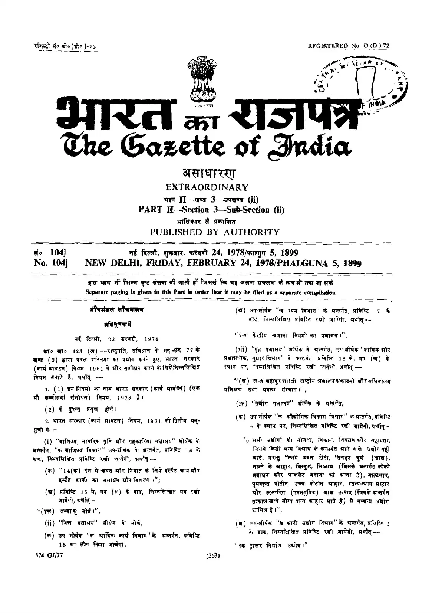
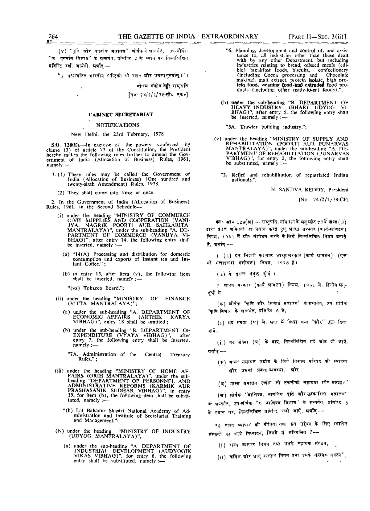
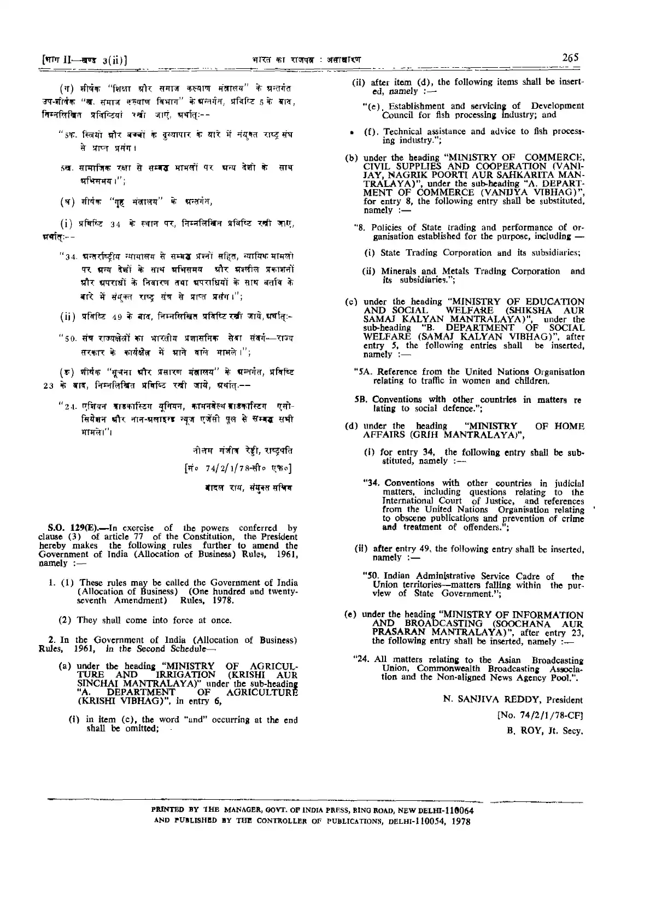

Amendment #126 (S.O. 128(E), 1978)
8 changes: 0 to the First Schedule, 8 to the Second Schedule. 6 applied2 not applied
The order, page by page
Page 1 of 4

Page 2 of 4

12345678after Schedule 2 › MINISTRY OF COMMERCE CIVIL SUPPLIES AND COOPERATION › DE- PARTMENT OF COMMERCE › entry 14
- 14(A) Processing and distribution for domestic consumption and exports of Instant tea and Instant Coffee.
applied at schedule 2 › ministry MINISTRY OF COMMERCE, CIVIL SUPPLIES AND COOPERATION (VANIJYA, NAGRIK POORTI AUR SAHKARITA… in the Rules after #126
states inferred loose
after Schedule 2 › MINISTRY OF COMMERCE CIVIL SUPPLIES AND COOPERATION › DE- PARTMENT OF COMMERCE › entry 15 › item v
- va. Tobacco Board.
applied at schedule 2 › ministry MINISTRY OF COMMERCE, CIVIL SUPPLIES AND COOPERATION (VANIJYA, NAGRIK POORTI AUR SAHKARITA… in the Rules after #126
states inferred loose
Schedule 2 › MINISTRY OF FINANCE › DEPARTMENT OF ECONOMIC AFFAIRS › entry 18
applied at schedule 2 › ministry MINISTRY OF FINANCE › department A › group_heading V › entry 18 in the Rules after #126
after Schedule 2 › MINISTRY OF FINANCE › DEPARTMENT OF EXPENDITURE › entry 7
- 7A. Administration of the Central Treasury Rules.
applied at schedule 2 › ministry MINISTRY OF FINANCE › department B › entry 7A in the Rules after #126
Schedule 2 › MINISTRY OF HOME AF- FAIRS › DEPARTMENT OF PERSONNFI AND ADMINISTRATIVE REFORMS › entry 19 › item b
- b. Lal Bahadur Shastri National Academy of Administration and Institute of Secretariat Training and Management.
applied at schedule 2 › ministry MINISTRY OF HOME AFFAIRS › department DEPARTMENT OF PERSONNEL AND ADMINISTRATIVE REFORMS ›… in the Rules after #126
states inferred loose
Schedule 2 › MINISTRY OF INDUSTRY › DEPARTMENT OF INDUSTRIAL DEVELOPMENT › entry 6
- 6. Planning, development and control of, and assistance to, all industries other than those dealt with by any other Department, but including Industries relating to bread, oilseed meats (edible) breakfast foods, biscuits, confectionery ( Including Cocoa processing and Chocolate making), malt extract,…
applied at schedule 2 › ministry MINISTRY OF INDUSTRY › department A › group_heading L › entry 6 in the Rules after #126
after Schedule 2 › MINISTRY OF INDUSTRY › DEPARTMENT OF HEAVY INDUSTRY › entry 5
- 5A. Trawler building industry.
not applied (the change could not be placed in the Rules as read; see How this document was read)
Schedule 2 › MINISTRY OF SUPPLY AND REHABILITATION › DE- PARTMENT OF REHABILITATION › entry 2
- 2. Relief and rehabilitation of repatriated Indian nationals.
not applied (the change could not be placed in the Rules as read; see How this document was read)
Page 3 of 4

1234567Schedule 2 › MINISTRY OF AGRICUL- TURE AND IRRIGATION › DEPARTMENT OF AGRICULTURE › entry 6 › item c
applied at schedule 2 › ministry MINISTRY OF COMMERCE, CIVIL SUPPLIES AND COOPERATION (VANIJYA, NAGRIK POORTI AUR SAHKARITA… in the Rules after #126
after Schedule 2 › MINISTRY OF AGRICUL- TURE AND IRRIGATION › DEPARTMENT OF AGRICULTURE › entry 6 › item d
- e. . Establishment and servicing of Development Council for fish processing Industry; and • (f). Technical assistance and advice to fish processing industry.
applied at schedule 2 › ministry MINISTRY OF COMMERCE, CIVIL SUPPLIES AND COOPERATION (VANIJYA, NAGRIK POORTI AUR SAHKARITA… in the Rules after #126
Schedule 2 › MINISTRY OF COMMERCE, CIVIL SUPPLIES AND COOPERATION › DEPART- MENT OF COMMERCE › entry 8
- 8. Policies of State trading and performance of organisation established for the purpose, including -
- i. State Trading Corporation and its subsidiaries
- ii. Minerals and Metals Trading Corporation and its subsidiaries.
applied at schedule 2 › ministry MINISTRY OF FINANCE › department A › group_heading V › entry 18 in the Rules after #126
states inferred loose
after Schedule 2 › MINISTRY OF EDUCATION AND SOCIAL WELFARE › DEPARTMENT OF SOCIAL WELFARE › entry 5
- 5A. Reference from the United Nations Organisation relating to traffic in women and children.
- 5B. Conventions with other countries in matters re lating to social defence.
applied at schedule 2 › ministry MINISTRY OF FINANCE › department B › entry 7A in the Rules after #126
Schedule 2 › MINISTRY OF HOME AFFAIRS › entry 34
- 34. Conventions with other countries in judicial matters, including questions relating to the International Court of Justice, and references from the United Nations Organisation relating to obscene publications and prevention of crime and treatment of offenders.
applied at schedule 2 › ministry MINISTRY OF HOME AFFAIRS › department DEPARTMENT OF PERSONNEL AND ADMINISTRATIVE REFORMS ›… in the Rules after #126
after Schedule 2 › MINISTRY OF HOME AFFAIRS › entry 49
- 50. Indian Administrative Service Cadre of the Union territories--matters falling within the purview of State Government.
applied at schedule 2 › ministry MINISTRY OF INDUSTRY › department A › group_heading L › entry 6 in the Rules after #126
after Schedule 2 › MINISTRY OF INFORMATION AND BROADCASTING › entry 23
- 24. All matters relating to the Asian Broadcasting Union, Commonwealth Broadcasting Association and the Non-aligned News Agency Pool.
not applied (the change could not be placed in the Rules as read; see How this document was read)
Page 4 of 4
How this document was read
Changes placed by an inference rule
| Change | Rule | Status | What |
|---|---|---|---|
| 1 | loose | accepted | change 1: department DE- PARTMENT OF COMMERCE taken for department DEPARTMENT OF COMMERCF, named loosely |
| 2 | loose | accepted | change 2: department DE- PARTMENT OF COMMERCE taken for department DEPARTMENT OF COMMERCF, named loosely |
| 5 | loose | accepted | change 5: department DEPARTMENT OF PERSONNFI AND ADMINISTRATIVE REFORMS taken for department DEPARTMENT OF PERSONNEL AND ADMINISTRATIVE REFORMS, named loosely |
Known issues
| Change | Issue | Known as |
|---|---|---|
| 7 | change 7: 2 parts are entry 5 under schedule 2 › ministry MINISTRY OF INDUSTRY › department B | A number twice |
| 8 | change 8: no entry 2 under schedule 2 › ministry MINISTRY OF SUPPLY AND REHABILITATION › department A | Entries not in the state |
From the Government of India (Allocation of Business) Rules, 1961 and their amendments, as published by the Cabinet Secretariat (cabsec.gov.in), read by orgpedia. The readings of the older scanned gazettes have known gaps.